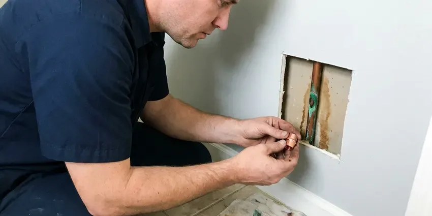

Water Leak Repair in Smyrna, GA
From pinhole copper leaks to failed PEX fittings and broken yard lines, we repair water leaks throughout Smyrna, GA with clear, upfront pricing.
- Prevent Costly Damage
- Precise Leak Detection
- Fast Leak Location Service
- Slab Leak Specialists
Need Urgent Water Leak Repair in Smyrna, GA?
Contact HGR Plumbing today for prompt and professional service that restores your peace of mind and prevents extensive water damage.
Water Leak Repair in Smyrna, GA for Walls, Slabs, Ceilings and Yard Lines
HGR Plumbing understands the urgency of water leaks in any Smyrna, GA home. From dripping faucets to hidden pipe bursts, our team pinpoints the problem and provides durable repairs to protect your property.
Our expertise includes:
- Advanced Electronic Leak Detection
- Slab Leak Location and Repair
- Copper, PEX, CPVC and polybutylene section repairs and reroutes

Additional Plumbing Repair Services in Smyrna, GA
We offer expert plumbing repair services across Smyrna, GA to stop leaks, clear blockages, and keep every fixture working the way it should.


Customers
Why Choose HGR Plumbing for Water Leak Repair in Smyrna, GA?
We prioritize your safety and the integrity of your home, making sure every repair is performed with the highest standards of quality and compliance.
- Prompt Service, We offer fast response times to minimize water damage and restore your plumbing functionality quickly.
- Durable Repairs, We use quality materials and proven techniques to ensure our repairs are robust and long-lasting, meeting local Smyrna codes.
- Skilled Technicians, Our plumbers are highly trained and experienced in diagnosing and repairing all types of water leaks, using modern tools.
Citywide Coverage
HGR Plumbing proudly serves every neighborhood in Smyrna, ensuring that no matter where you are located, expert water leak repair is just a call away. We understand that leaks don't wait, and we don't either.
Experienced Team
Each plumber on the leak team has years of repair experience with copper, PEX and older piping materials. They know how to make lasting repairs in tight spaces with little disruption.
Safety-First Approach
When leaks have soaked drywall or insulation, we point out mold risk and drying needs. We also shut off and restore water carefully to avoid pressure surges that cause new leaks.
Trusted Certified Smyrna Plumbing Services Professionals
At HGR Plumbing, we take pride in providing licensed, certified plumbing services throughout Smyrna, GA. Backed by leading industry credentials, our experienced plumbers combine technical skill with genuine customer care. Whether it is repair, installation, or maintenance, we follow strict safety and quality standards to deliver long-lasting results you can trust.
Call Us Now PHCC Plumbing Contractor Recognition
PHCC Plumbing Contractor Recognition Better Business Bureau (BBB) Accreditation
Better Business Bureau (BBB) Accreditation Angi Certified Pro
Angi Certified Pro ISO 9001 Quality Management Certification
ISO 9001 Quality Management CertificationPrecise Water Leak Repair Services in Smyrna, GA
Underground Water Line Repair in Smyrna, GA
Leaks in underground water lines can be difficult to detect and repair, often signaled by sudden drops in water pressure or unusually wet spots in your yard. HGR Plumbing employs advanced trenchless technologies like pipe bursting or pipe lining where feasible, to minimize yard disruption. For more severe damage, traditional excavation is performed with precision. We repair PVC, galvanized, and copper service lines, ensuring a robust and long-lasting connection to your Smyrna home's main water supply.

Fixture Leak Repair in Smyrna
Leaky faucets, toilets, and showers might seem minor, but they waste significant water and can lead to higher utility bills and mold growth. We repair or replace faulty washers, gaskets, O-rings, and cartridges in all major brands, including Moen, Delta, Kohler, and American Standard. Our plumbers ensure proper sealing and function, stopping the drips and restoring efficient water usage throughout your Smyrna home. We also check for correct water pressure settings.
Commercial Water Leak Repair in Smyrna, GA
Water leaks in commercial properties in Smyrna, GA can lead to business interruptions, inventory damage, and potential health hazards. HGR Plumbing provides complete water leak repair services for businesses, retail spaces, and industrial facilities. We understand the need for quick, efficient service to minimize downtime. Our plumbers are equipped to handle larger-scale systems and complex plumbing layouts, ensuring your business operations continue smoothly with minimal disruption.
Emergency Water Leak Repair in Smyrna, GA
A burst pipe or sudden, significant leak requires urgent attention to prevent extensive water damage. HGR Plumbing offers emergency water leak repair services across Smyrna, GA. Our rapid response team is available to promptly shut off water, assess the damage, and perform urgent repairs. We understand the stress these situations cause and prioritize getting your plumbing back in order with minimal downtime, even outside regular business hours. Call us right away for any critical water leak issue.
Yard and Main Line Leak Repair in Smyrna, GA
The service line between the meter and your house can crack from rocky soil, roots or ground movement. Homes are a mix of slab, crawlspace, and basement foundations, and crawlspace homes make most supply and drain repairs easier to reach. Wet spots in the yard, sinkholes or very green patches are typical signs. We locate the leak, excavate carefully and replace the damaged section with copper or approved plastic pipe. For long or deep lines, a new trenchless line may be the better value.
Slab Leak Repair in Smyrna
Slab leaks are common in homes with older concrete slab foundations and shifting soil. We use specialized electronic listening devices and thermal cameras to locate these hidden leaks under your home's foundation. Our methods include pipe re-routing or targeted slab penetration to fix the compromised copper, PEX, or galvanized pipes, minimizing damage and restoring your plumbing integrity. We also assess for potential foundation damage caused by prolonged water exposure.
Pipe Leak Repair & Replacement in Smyrna, GA
Whether you have galvanized, copper, PVC, or PEX piping, leaks can occur from corrosion, freezing, or impact damage. Our plumbers are experts in repairing and replacing sections of compromised pipe in Smyrna, GA. We carry a broad range of fittings and pipe materials on our trucks to make immediate repairs. For older homes with widespread corrosion, we can discuss partial or full re-piping options, offering lasting solutions that meet current Georgia plumbing standards and improve your water quality and pressure.

Fixture and Supply Line Leak Repair in Smyrna, GA
Many leaks are at faucets, toilets, angle stops and braided supply lines. These small drips can rot cabinet floors and waste hundreds of gallons. We replace worn cartridges, flappers, fill valves, shutoff valves and supply lines. Replacing old plastic supply lines with braided stainless is a low-cost way to prevent a flood.
Trusted Water Leak Repair Near Me in Smyrna, GA
When you search for water leak repair near me in Smyrna, you want a local company that understands the plumbing challenges of Georgia. HGR Plumbing is your neighborhood expert, ready to dispatch skilled technicians to your home promptly. We're familiar with the local infrastructure and common building practices, ensuring a fast and effective response to your plumbing emergency.
Choosing a local provider like HGR Plumbing for your water leak repair in Smyrna, GA means getting personalized service from a team that cares about the community. We're not just fixing pipes; we're protecting your home and investment with dependable, long-lasting solutions. Our proximity allows us to offer fast service, often on the same day you call, preventing minor leaks from becoming major disasters.
HGR Plumbing at a Glance
- Licensed and insured plumbers serving Smyrna, GA
- 24/7 emergency service with same-day scheduling
- Upfront, flat-rate pricing before work begins
- 4.9-star rated by 357+ Georgia customers
Smyrna Map
Smyrna Information
- Population
- 56,566
- Area codes
- 770/404/678
- Service area
- Smyrna and communities within 40 miles
- Nearby
- Marietta, Atlanta, Sandy Springs, Brookhaven
Hard water, high municipal pressure and soil movement under slabs all contribute to hidden leaks in Smyrna, GA homes, and fast leak repair saves both water and your home.
Expert Services
Trust our professionals for reliable HGR Plumbing solutions in Smyrna, GA.
Our Specialized Plumbing Services in Smyrna, GA
At HGR Plumbing, we provide a complete range of plumbing services across Smyrna, GA. From leak detection to full system installations, our team ensures fast, precise, and affordable service for both residential and commercial properties. Explore our core services below:


How Our Water Leak Repair Process Works in Smyrna, GA
At HGR Plumbing, we follow a proven, systematic approach to ensure every water leak repair in Smyrna, GA is handled professionally and effectively.
Request a Quote
Call (770) 470-3778 and tell us what you are noticing, such as a high bill, wet spot or the sound of running water. We schedule a leak detection visit promptly.
Locate the Leak
We isolate lines with pressure tests and pinpoint the leak with acoustic, thermal and moisture tools. You get repair options and a flat price before we open anything.
Repair and Test
We make the repair, pressure test the line and confirm the meter stays still. You receive photos and documentation for your files or insurance.
Frequently Asked Questions About Water Leak Repair in Smyrna
Simple fixture leaks usually cost $150 to $400, while in-wall leaks run about $300 to $900 before patching. Slab and yard line leaks typically range from $1,000 to $4,000. We provide a firm price after locating the leak.
Many policies cover sudden water damage and sometimes the cost to access the leak, but not the pipe repair itself. We provide thorough documentation to help with your claim.
Yes. Our repairs carry a workmanship warranty and materials have manufacturer coverage. If the same repair leaks within the warranty period, we fix it for free.
We are experienced in repairing and working with all major brands of plumbing fixtures including Moen, Delta, Kohler, American Standard, and more. For pipes, we handle repairs for copper, PEX, PVC, CPVC, and galvanized steel, found in Georgia homes of various ages.
While small, visible leaks like a dripping faucet might be tempting to DIY, most water leaks, especially those involving pipes within walls, under floors, or in the main service line, require professional expertise. A professional plumber from HGR Plumbing has the tools and knowledge to properly diagnose and repair the leak without causing further damage to your Smyrna home.
Our plumbers are experienced in repairing and working with all major brands of plumbing fixtures, including Moen, Delta, Kohler, American Standard, and more. For piping, we handle copper, PEX, PVC, CPVC, and galvanized pipes, so we can address any leak regardless of your home's plumbing system.
A temporary clamp or tape can slow a leak in an emergency. Permanent repairs, especially inside walls or under slabs, should be done by a licensed plumber to avoid unseen damage.
Turn off every fixture and watch your water meter. If the leak indicator moves, you probably have a leak. High bills, warm floor spots and musty odors are other telltale signs.
What People Are Saying About Our Plumbing Experts?

James P.
Our commercial plumbing system had a leak under the sink, and HGR Plumbing handled it professionally. The plumbers arrived quickly and restored everything without disruption to our customers.
Commercial Plumbing · Smyrna, GA
Daniel K.
A pipe burst at 11 pm and they actually answered. The plumber showed up within the hour, shut everything down, and had us back to normal the next morning. Could not ask for more.
Emergency Plumbing · Brookhaven, GA
Emily R.
I called HGR Plumbing for plumbing repair, and the technician was fast, polite, and thorough. They explained the problem clearly and fixed it the same day. I will definitely hire them again. Highly recommended!
Plumbing Repair · Dunwoody, GA
Mark T.
When our office needed drain cleaning, HGR Plumbing provided quick, reliable service. The plumber arrived on time and made sure every drain flowed perfectly before leaving. Very satisfied.
Drain Cleaning · Atlanta, GARobert G.
The trenchless sewer replacement saved our front yard. They walked us through the camera inspection footage first so we knew exactly what we were paying for.
Sewer Line Replacement · Brookhaven, GA
Patricia H.
We had a slab leak that two other companies could not find. HGR Plumbing located it in under an hour, explained our options, and the price matched the quote to the dollar.
Slab Leak Repair · Sandy Springs, GA